From planning-mode declaration to pattern-specific execution
1ADIA Lab, Abu Dhabi · 2University of Granada
· 3Luxembourg Institute of Science and Technology
4Cornell University · 5Lawrence Berkeley National Laboratory
LLM agents solve long-horizon tasks by generating a plan and then executing it. That takes two distinct capabilities: selecting a plan that suits the task, and executing it faithfully. An agent can deviate from a structured plan while acting, or faithfully execute a plan that is poorly matched to its environment, and final task success cannot tell those two failures apart. We call a mismatch between the declared plan and its execution the Plan Declaration–Execution Gap.
To study it we propose Planning-as-Routing: the LLM declares one of four planning modes (Predefined, Sequential, Hierarchical or Search) and a deterministic router sends the task to the matching pattern-specific executor. We compare it with a plan-free Flat ReAct baseline and a Plan+ReAct baseline that plans in the prompt but executes in a generic loop, across WebArena, Mind2Web, SWE-bench Verified and ALFWorld with three LLMs.
Three patterns hold. Generic Plan+ReAct often fails to preserve the declared structure, especially for longer plans: only 22–45% of trajectories preserve it across three benchmarks, whereas pattern-specific executors enforce it. The best mode depends on the environment and the model (Search on ALFWorld, Hierarchical on SWE-bench). The largest gains come from execution: matching executors raise task success from 0.48 to 0.92 on ALFWorld and from 0.36 to 0.44 on SWE-bench Verified over Plan+ReAct. Current LLMs do not yet reliably choose the strongest mode for a task. Routing closes much of the execution gap; selecting the right mode remains open.
Every pattern below runs on the same query, “Check for pickup restaurants available in Boston”, so the only thing that changes from slide to slide is how the plan is declared, dispatched and checked. Step through with the buttons or the arrow keys; the work each pattern follows is listed under References.
Five of the seven tabs are ALFWorld, sharing one model (DeepSeek-V4-Flash, seed 13) so the architecture is the only thing that changes between them; three of those — Sequential, Predefined, Hierarchical — are the same underlying task, forced through three different planning structures, so they are directly comparable to one another. The other two tabs are single Plan+ReAct examples from Mind2Web and WebArena, chosen to show the gap from a different angle: one where the task succeeds despite the plan being abandoned, one where the plan's structure roughly holds and the task still fails.
The same declared-vs-executed check runs across every benchmark the project covers, each with its own action vocabulary; the animations above are ALFWorld, but the underlying analysis spans all four: ALFWorld (household text-adventures — take, clean, heat, place), Mind2Web (real website navigation — click, type, select), SWE-bench (repository bug fixes — search, read, patch, test), and WebArena (live simulated sites — GitLab, Reddit, shopping).
Beyond whether a plan's structure holds, the full metrics suite tracks what each mode costs and how it degrades. The same three measurements are run on all three models, across all four benchmarks; ALFWorld's versions are discussed below as a worked example, and the other three benchmarks' panels sit alongside them for direct comparison.
Mean tokens spent per task, split into thinking (solid) and answer (hatched) tokens, per model and mode. In ALFWorld, Hierarchical- and Search-forced modes spend 88–99% of their tokens thinking — several times more total tokens per task than Plan+ReAct or flat ReAct, which stay in the 70–94% range.
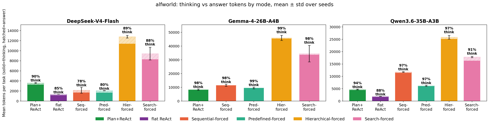
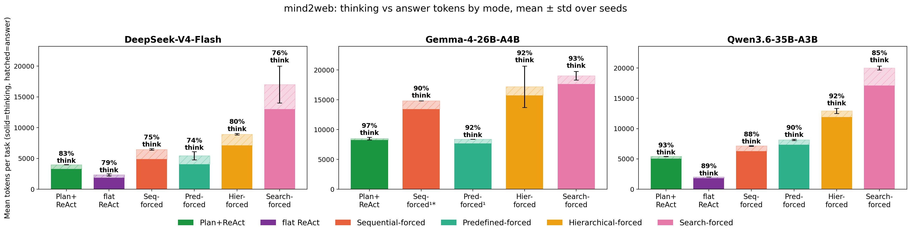
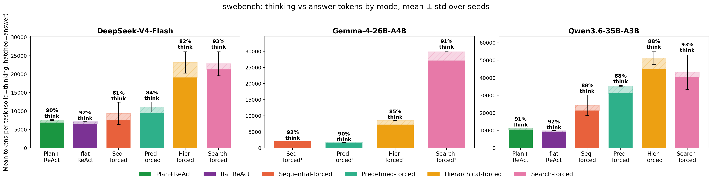
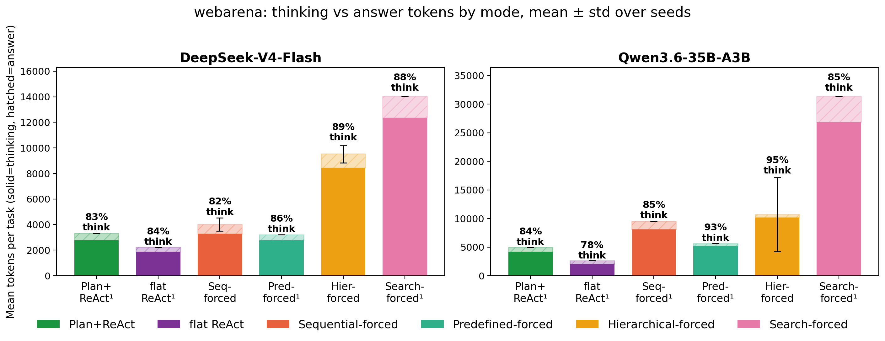
Success rate against task length, binned, one line per mode. In ALFWorld, every mode's success rate falls as tasks get longer, but not at the same rate: Hierarchical- and Search-forced hold up noticeably better past 16+ steps than the flat ReAct and Plan+ReAct baselines, which drop off sharply.
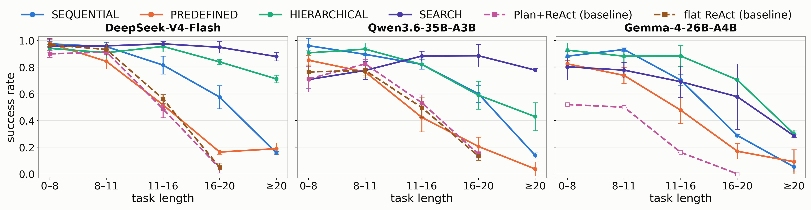
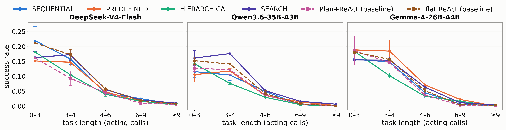
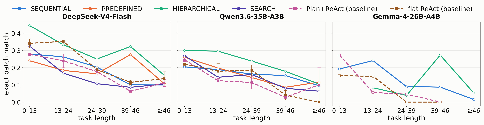
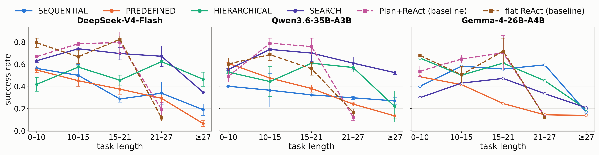
Mean number of LLM calls per task, with mean tokens per call annotated above each bar. In ALFWorld, Hierarchical- and Search-forced make roughly 3–8× more calls per task than the other modes, but each of those calls is comparatively cheap — the call count and the tokens-per-call figure move in opposite directions across modes, not together.
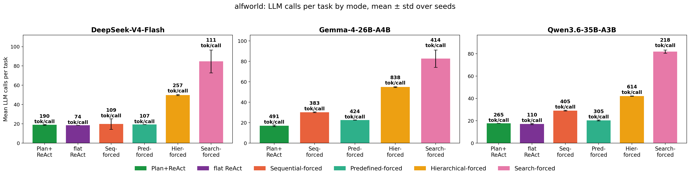
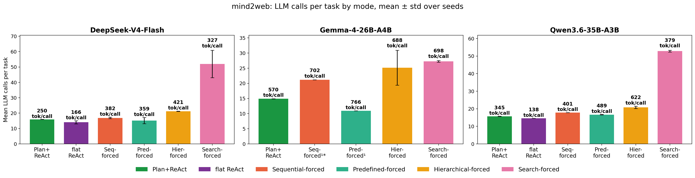
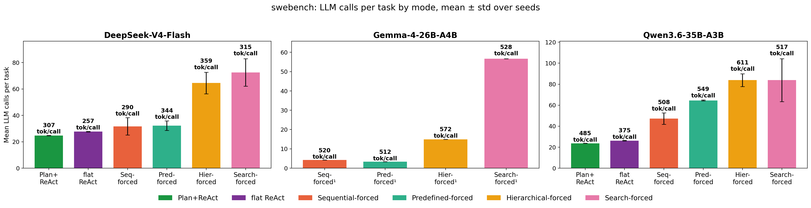
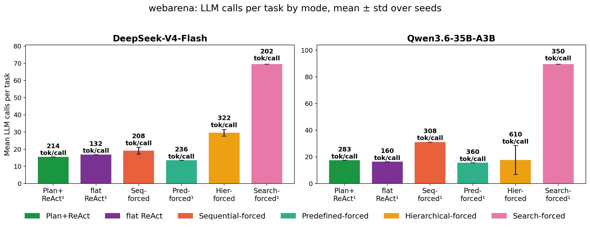
@misc{oota2026declare,
title = {Do {LLM} Agents Execute the Plans They Declare? From Planning-Mode
Declaration to Pattern-Specific Execution},
author = {Oota, Subba Reddy and Herrera, Francisco and Cabot Sagrera, Jordi and
L{\'o}pez de Prado, Marcos and Khan, Shadab},
note = {Preprint},
year = {2026}
}
Prior work each planning pattern follows, as cited in the paper.